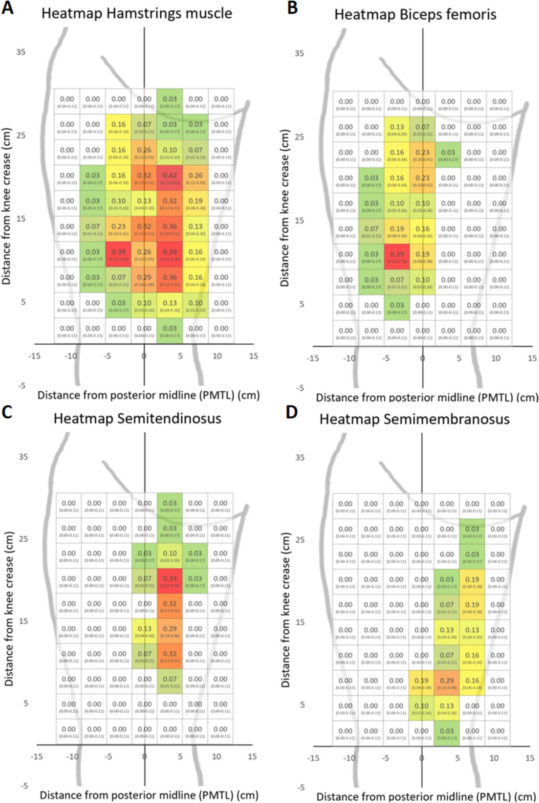

Respuesta clínica corta
¿Dónde conviene buscar primero los puntos motores de los isquiotibiales?
En zonas centrales próximas a la línea media posterior, sin asumir una posición fija: la mejor celda solo alcanzó una probabilidad del 42%.
Dato clave31 adultos sanos · 70 celdas · máximos del 29% al 42%
El mapa identifica zonas donde conviene comenzar la búsqueda de puntos motores en los isquiotibiales, pero las probabilidades máximas fueron moderadas y la variabilidad individual obliga a confirmar cada localización antes de colocar los electrodos.
Observado
Qué encontró y cómo interpretarlo
Se localizaron 172 puntos motores en 31 participantes. El bíceps femoral presentó más puntos que el semitendinoso y el semimembranoso, pero la distribución individual fue amplia y ninguna celda funcionó como ubicación universal.
En el mapa conjunto, la mayor probabilidad fue del 42%. Por músculo, las mejores áreas alcanzaron el 39% para bíceps femoral y semitendinoso y el 29% para semimembranoso. Esto permite priorizar zonas de búsqueda, no colocar un electrodo sin comprobación.
La muestra se justificó mediante un cálculo previo para distinguir una probabilidad del 40% frente al 20%. Sin embargo, los puntos se identificaron mediante inspección visual y palpación por un procedimiento sin evaluación publicada de fiabilidad dentro del propio estudio.
El artículo relaciona sexo masculino y mayor actividad física con más puntos sobre el bíceps femoral, con un R² de 0,38. Es un análisis secundario exploratorio y no permite ajustar una pauta individual ni atribuir la diferencia a esas características.
Dos autores declararon participación accionarial en una empresa que desarrolla tecnología de estimulación neuromuscular y una patente relacionada. La declaración es transparente, pero aumenta la importancia de validar el mapa de forma independiente.
Atlas del artículo
Imágenes para entender el procedimiento
Estas figuras proceden del artículo original y se reproducen con licencia abierta verificada. Se muestran por su utilidad anatómica o técnica, no como prueba aislada de diagnóstico o eficacia.

Probabilidad de encontrar al menos un punto motor en cada celda de 3 × 3 cm: conjunto de isquiotibiales, bíceps femoral, semitendinoso y semimembranoso.
Cómo leerlaLos colores representan frecuencias de esta muestra sana, no una plantilla exacta de colocación ni una predicción individual.
Flodin J et al., figura 4 del artículo original · Fuente · Licencia CC BY.
Procedimiento del artículo
Cómo se construyó el mapa y cómo debe leerse
El equipo delimitó por ecografía el bíceps femoral, el semitendinoso y el semimembranoso de cada participante; después buscó los puntos motores con una sonda de estimulación y normalizó sus posiciones sobre una cuadrícula común.
- Cuadrícula
- 70 áreas de 3 × 3 cm sobre la cara posterior del muslo
- Estimulación de búsqueda
- 3 Hz y 400 μs; los puntos se encontraron entre 5 y 25 mA
- Referencia longitudinal
- Distancia desde el pliegue poplíteo sobre la línea media posterior
- Confirmación anatómica
- Ecografía previa para asignar cada punto al músculo correspondiente
- 01
Delimitar la anatomía individual
Con la persona en decúbito prono, se identificaron por ecografía los límites del bíceps femoral, semitendinoso y semimembranoso y se marcaron sobre la piel.
- Referencias
- Pliegue poplíteo, surco glúteo, línea media posterior y contornos musculares ecográficos.
- Lectura
- La ecografía asigna el punto a un músculo; no determina por sí misma dónde está su punto motor.
- 02
Buscar la contracción con menor intensidad
La sonda recorrió toda el área marcada con estimulación continua. Se aumentó la intensidad por niveles hasta observar y palpar una contracción localizada.
- Referencias
- El punto motor se definió como el lugar cutáneo que provocaba una contracción con menos corriente que su entorno inmediato.
- Lectura
- La identificación fue visual y palpatoria; no se confirmó mediante electromiografía ni con un segundo evaluador.
- 03
Normalizar la posición
Cada punto se expresó como distancia longitudinal desde el pliegue de la rodilla y distancia horizontal respecto a la línea media, ajustadas a un muslo de dimensiones promedio.
- Referencias
- Longitud del muslo, circunferencia al nivel del punto y línea media posterior.
- Lectura
- La normalización permite construir el mapa poblacional, pero reduce parte de la anatomía individual.
- 04
Utilizar el mapa como punto de partida
Las celdas coloreadas señalan dónde fue más frecuente localizar al menos un punto motor y pueden priorizar el inicio de una búsqueda clínica individual.
- Referencias
- Zonas centrales situadas aproximadamente entre 5 y 25 cm por encima del pliegue poplíteo.
- Lectura
- Una celda roja no garantiza encontrar un punto: incluso las probabilidades máximas quedaron entre el 29% y el 42%.
Procedimiento reconstruido a partir de los métodos y las figuras 1, 2 y 4 del artículo original. Describe cómo se obtuvo el mapa; no es una pauta universal de electroestimulación ni sustituye la localización individual.
Aplicabilidad
Qué significa clínicamente
El mapa puede emplearse para decidir dónde iniciar una búsqueda con sonda de punto motor cuando no se dispone de una localización individual previa.
Una respuesta localizada con menor intensidad debe confirmarse en la persona y en la tarea prevista. Las probabilidades moderadas hacen inadecuado tratar las celdas como coordenadas fijas.
La figura ayuda a enseñar la variabilidad anatómica y a evitar la falsa precisión de las plantillas genéricas de electrodos.
La selección final de parámetros, tamaño de electrodo, intensidad y objetivo terapéutico queda fuera de este estudio.
Límite
Qué no permite afirmar
Muestra pequeña y sana, con exclusión de obesidad y enfermedades relevantes; la generalización a pacientes es indirecta.
Identificación visual y palpatoria sin cegamiento, segundo evaluador o análisis de fiabilidad específico.
Se excluyeron puntos situados a menos de 5 cm de otro y la intensidad avanzó mediante escalones, por lo que algunos puntos pudieron no registrarse.
No comparó el mapa con otra estrategia de colocación ni midió comodidad, contracción, fuerza, función o resultados clínicos.
Contexto
¿Se parece a tu paciente?
- Población estudiada
- 31 adultos sanos de 18 a 65 años, 15 mujeres y 16 hombres, sin obesidad ni enfermedad neuromuscular o metabólica conocida.
- Diseño
- Estudio exploratorio de localización y medición
- Resultado evaluado
- Proporción de participantes con al menos un punto motor en cada celda de 3 × 3 cm
Fuente primaria
Lee el estudio, no solo nuestro análisis
Flodin J, Amiri P, Juthberg R, Ackermann PW. Motorpoint Heatmap of the Hamstring Muscles to Facilitate Neuromuscular Electrical Stimulation. Ann Biomed Eng. 2025;53(3):612-621. doi: 10.1007/s10439-024-03657-z
Responsabilidad editorial
Francisco José Extremera García
Fisioterapeuta colegiado ICPFA 4288 · Osteópata D.O.
Creador y responsable editorial de FisioLógico
- Última revisión
- Conflictos de interés
- Ninguno declarado.